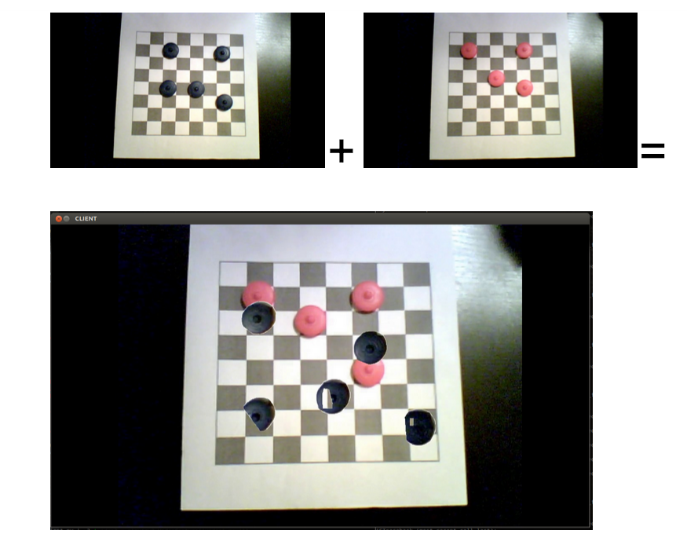

Overview
For this project, I created a system that used computer vision to let people play checkers remotely using physical boards and pieces. The system extracted the location of each player’s pieces on their board and sent them to a server. The server would compose the input of multiple players to create a single scene, so that each player sees the same board despite only having half of the physical pieces, as seen below.
Method
This project is written in Python. The structure of the system can be divided into video composition and video streaming over the network. For the video composition, which consists mainly of background subtraction, finding homographies, etc. I used OpenCV’s Python wrapper and NumPy, which makes operating on large, multidimensional arrays and matrices simpler. I also used itertools and collections, two standard Python libraries for easier list iteration.
Algorithms
I begin by finding homography between the two player’s boards so that they can be mapped into the same space. I use the first few frames of the video to establish a background to subtract off and use it to create a mask to isolate the pieces on one player’s board. I then refine the mask by filtering for bright colors to cut down on noise from the board, which is black and white. This limited me to using pieces that are bright colors but allowed me to do a better job with background subtraction. From their I further adjust the mask by using cv2’s contours to find the edges of the pieces. After the other player’s pieces have been subtracted off the board they are composited onto the second player’s board.
Other Considerations
One special challnge of this project was using background subtraction to isolate the pieces of one board from the board itself. Most background subtraction solutions are focused around isolating the moving parts of an image, as this is considered to be the foreground. In this case, pieces needed to remain in the foreground after they were placed on the board, and so I could not use motion based background subtraction. The checkerboard pattern, which allowed us to map one board onto the other, made the background subtraction less accurate since we could not easily distinguish the black and white pieces from the black and white tiles.